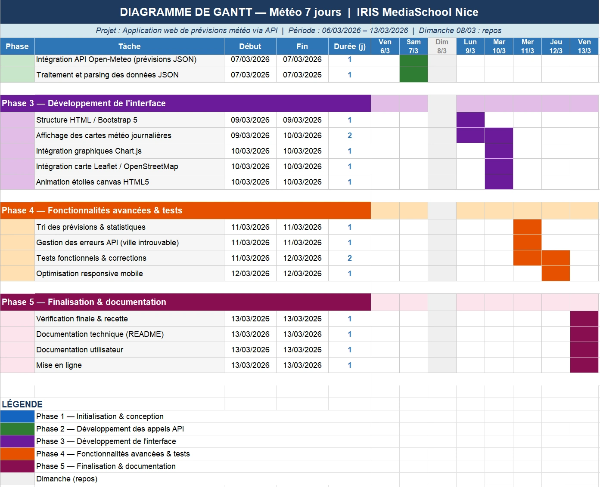

Météo 7 jours
Prévisions pour les villes de France — données Open-Meteo
Dans les systèmes d'information modernes, les applications sont souvent construites selon une architecture séparant les services de données et les interfaces utilisateurs. Les données sont généralement exposées par des API (Application Programming Interfaces), tandis que les utilisateurs interagissent avec ces informations via des interfaces web ou des applications clientes.
Dans ce contexte, de nombreuses organisations, notamment des établissements de formation comme IRIS MediaSchool Nice, ont besoin d'outils permettant de consulter rapidement des données externes, de les visualiser de manière claire et de faciliter leur exploitation par les utilisateurs.
Le projet Météo 7 jours a été réalisé afin de répondre à cette problématique. Il consiste à développer une application web capable de consommer une API météo publique, de récupérer des données au format JSON et de les présenter dans une interface utilisateur ergonomique et interactive.
L'application permet à un utilisateur de rechercher une ville française (par nom ou code postal) et d'obtenir les prévisions météorologiques sur 7 jours, accompagnées de statistiques, graphiques et d'une carte interactive.
Ce projet illustre une situation très courante dans le développement web professionnel : la création d'interfaces permettant d'exploiter des services distants via des API.
Dans de nombreux contextes professionnels, il est nécessaire de pouvoir consulter rapidement des informations météorologiques fiables afin d'anticiper certaines activités ou prendre des décisions.
Ces données sont généralement fournies par des services externes accessibles via API, ce qui nécessite le développement d'une interface capable de récupérer, traiter et afficher ces informations de manière claire pour l'utilisateur.
L'objectif de cette réalisation est donc de développer une application web consommant une API météo, permettant à l'utilisateur de rechercher une ville française et d'afficher les prévisions météorologiques sur 7 jours, accompagnées de statistiques, graphiques et d'une carte interactive.
Cette application démontre la capacité à exploiter un service distant, manipuler des données JSON et concevoir une interface web dynamique.
Le projet repose sur une architecture frontend consommant des services externes via API, en s'appuyant sur des technologies web modernes respectant les standards du développement web.
Frontend
- ◈ HTML5 / CSS3 — structure et mise en forme de l'interface utilisateur.
- ◈ Bootstrap 5 — framework CSS permettant la création d'une interface responsive et mobile-first.
- ◈ JavaScript (ES6) — gestion de la logique applicative, interactions utilisateur et appels API.
- ◈ Chart.js — visualisation des données météorologiques sous forme de graphiques (température, humidité, vent, précipitations)
- ◈ Leaflet.js / OpenStreetMap — affichage d'une carte interactive centrée sur la ville recherchée.
- ◈ Bootstrap Icons — icônes utilisées dans l'interface utilisateur.
APIs utilisées
- ◈ Open-Meteo API — récupération des prévisions météorologiques sur 7 jours (température, humidité, vent, précipitations, lever et coucher du soleil).
- ◈ Nominatim (OpenStreetMap) — service de géocodage permettant de convertir un nom de ville ou un code postal en coordonnées GPS.
Outils et environnement
- ◈ Visual Studio Code — environnement de développement.
- ◈ Git / GitHub — gestion de versions et hébergement du code source.
- ◈ Live Server (extension Visual Studio Code) — serveur local pour tester l'application dans le navigateur.
L'ensemble de l'application fonctionne côté client dans le navigateur, en interrogeant directement les APIs publiques via des requêtes HTTP et en exploitant les réponses au format JSON pour générer dynamiquement l'interface utilisateur.

Cette réalisation consiste à développer une application web permettant de consommer une API météo et d'afficher les données récupérées de manière claire et interactive.
L'utilisateur peut rechercher une ville française par nom ou code postal. Une première requête est envoyée à l'API Nominatim (OpenStreetMap) afin d'obtenir les coordonnées géographiques correspondantes. Ces coordonnées sont ensuite utilisées pour interroger l'API Open-Meteo, qui fournit les prévisions météorologiques sur 7 jours au format JSON.
Les données récupérées sont traitées en JavaScript puis affichées dynamiquement dans l'interface sous différentes formes :
- ◈ cartes météo journalières présentant les prévisions pour chaque jour
- ◈ statistiques moyennes calculées à partir des données récupérées
- ◈ graphiques interactifs réalisés avec Chart.js
- ◈ carte interactive affichant la localisation de la ville avec Leaflet
L'application intègre également des fonctionnalités de tri des prévisions météo
ainsi qu'une gestion des erreurs pour les cas de ville introuvable ou d'erreurs
lors des appels API.
Cette réalisation démontre la capacité à exploiter une API, manipuler des
données JSON et développer une interface web dynamique.
La réalisation de ce projet m'a permis de mettre en pratique plusieurs compétences importantes du développement web, notamment l'exploitation d'API, la manipulation de données JSON et le développement d'une interface web dynamique en JavaScript.
J'ai également pu approfondir l'intégration de bibliothèques JavaScript telles que Chart.js pour la visualisation de données et Leaflet pour l'affichage d'une carte interactive. Ce projet m'a aussi permis de travailler sur la gestion des interactions utilisateur et le traitement des erreurs lors des appels API.
Cette réalisation m'a permis de mieux comprendre le fonctionnement des applications web modernes reposant sur des services externes, où le frontend interagit directement avec des API pour récupérer et afficher des données.
Cette réalisation professionnelle s'appuie sur plusieurs éléments permettant de présenter et de démontrer le fonctionnement de l'application :
- ◈ Code source de l'application Application web développée en HTML, CSS et JavaScript permettant de consommer les APIs Open-Meteo et Nominatim.
- ◈ Dépôt GitHub du projet Le code source est versionné et accessible en ligne, accompagné du contexte du projet, afin de faciliter la compréhension, la consultation et la reproduction de l'application en cliquant sur ce lien.
- ◈ Captures d'écran de l'application Illustrations de l'interface utilisateur montrant la recherche de ville, l'affichage des prévisions météo, les graphiques et la carte interactive.
- ◈ Documentation technique et utilisateur README détaillant la structure du projet, les technologies utilisées, le fonctionnement des appels API ainsi qu'un guide utilisateur permettant la prise en main de l'application.
- ◈ Version en ligne de l'application : https://meteo-klaudia.iris.a3n.fr:4433/
Plusieurs améliorations pourraient être envisagées afin d'enrichir l'application :
- ◈ Ajout d'une recherche multi-villes permettant de comparer les prévisions météorologiques de plusieurs villes.
- ◈ Mise en place d'un système de favoris afin d'enregistrer certaines villes pour un accès rapide.
- ◈ Ajout d'un cache local afin de limiter les appels aux API et améliorer les performances.
- ◈ Amélioration de l'interface utilisateur, par exemple avec l'ajout d'animations ou de nouveaux indicateurs météorologiques.
- ◈ Optimisation du traitement des données issues de l'API afin d'améliorer les performances et la réactivité de l'application.
Ces évolutions permettraient d'améliorer l'ergonomie de l'application et d'étendre ses fonctionnalités tout en restant dans une logique d'exploitation d'API externes.
1. Gérer le patrimoine informatique
- 1.1. Recenser et identifier les ressources numériques J'ai identifié les différentes ressources nécessaires à la réalisation de l'application, notamment les APIs Open-Meteo et Nominatim, les bibliothèques Chart.js et Leaflet, ainsi que les outils de développement comme Visual Studio Code, GitHub et Live Server, afin de structurer l'environnement technique du projet.
- 1.5. Gérer des sauvegardes Le projet est sauvegardé régulièrement afin de garantir la sécurité du code et des données. Une copie est également conservée sur un disque dur externe en complément du versioning GitHub, afin de prévenir toute perte de données.
2. Répondre aux incidents et aux demandes d'assistance et d'évolution
- 2.1. Collecter, suivre et orienter des demandes Les besoins du projet ont été définis à partir du contexte pédagogique et des objectifs décrits dans la fiche de réalisation, notamment la création d'une application web consommant une API météo. J'ai suivi ces demandes en les traduisant en fonctionnalités concrètes (recherche de ville, affichage des prévisions, graphiques et carte interactive).
4. Travailler en mode projet
- 4.1. Analyser les objectifs et les modalités d'organisation d'un projet Avant le développement, j'ai défini les objectifs de l'application, à savoir créer une interface web permettant de consulter les prévisions météorologiques d'une ville française via une API. J'ai également identifié les principales fonctionnalités à développer (recherche de ville, affichage des prévisions, graphiques météo et carte interactive) ainsi que les technologies nécessaires.
- 4.2. Planifier les activités La réalisation du projet a été planifiée à l'aide d'un diagramme de Gantt, permettant d'organiser les différentes étapes (analyse, développement, tests) et de suivre l'avancement de manière structurée.
5. Mettre à disposition des utilisateurs un service informatique
- 5.2. Déployer un service L'application a été déployée sur un serveur Linux (Ubuntu) accessible via l'adresse https://meteo-klaudia.iris.a3n.fr:4433/
Le déploiement a été réalisé à l'aide de Docker et d'un fichier docker-compose.prod.yml, permettant d'héberger l'application dans un environnement conteneurisé et de la rendre accessible en ligne de manière stable.
6. Organiser son développement professionnel
- 6.1. Mettre en place son environnement d'apprentissage personnel Pour réaliser ce projet, j'ai configuré mon environnement de développement avec Visual Studio Code et l'extension Live Server afin de tester l'application dans le navigateur. Je me suis également appuyé sur la documentation des APIs Open-Meteo et Nominatim ainsi que sur les documentations de Chart.js et Leaflet pour comprendre leur fonctionnement et les intégrer dans l'application.